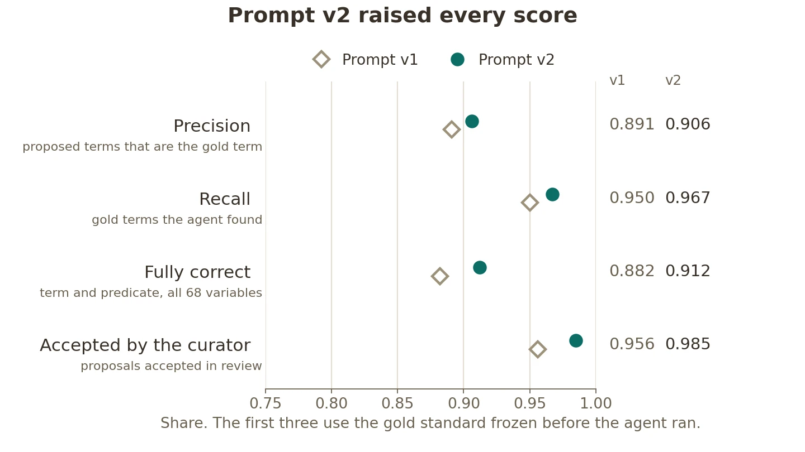

Data modelling · Ontologies · AI curation
A Parkinson’s biomarker data model, and an AI mapping agent held to a frozen gold standard
A LinkML model for Parkinson’s disease phenotypes and biomarkers, with ontology-bound value sets, cross-field validation rules and FAIR provenance. A blind AI agent then maps a messy study dictionary to ontology terms; a curator reviews every proposal, recorded in SSSOM, and the agent is scored against a gold standard frozen before it ran.

Can an AI agent be trusted to map study variables to ontologies?
Parkinson’s cohort data mixes rating scales, diagnoses, symptoms, fluid biomarkers (alpha-synuclein seed amplification, NfL, proteomics on SomaScan and Olink) and DaT-SPECT imaging, and every study exports it with its own names and units. Combining studies needs a shared model that says what a valid record is, and a mapping from each study’s variables to standard terms. AI agents can draft such mappings quickly; the question is how far to trust them, and how a curator should check them.
A disease-agnostic core with a Parkinson’s module
The core is a cohort model: a dataset holds flat lists of participants, visits, diagnoses, phenotype observations, clinical assessments, specimens, analytes, assays and biomarker measurements, linked by identifier so each class maps to one table. The Parkinson’s module imports it and narrows it: diagnoses to parkinsonian disorders with their published criteria, assessments to MDS-UPDRS, MoCA and Hoehn and Yahr. A new disease area adds a module without touching the core.
- Ontology-bound value sets. MONDO for diseases, HPO for phenotypes, UBERON for specimens and brain regions, OBI and NCIT for assays, PRIDE for platforms, LOINC for rating scales, UCUM units mapped to UO. Diseases, phenotypes and brain regions follow an ontology branch; brain regions exclude the cell types UBERON relates to the brain.
- 16 cross-field rules. Units must match the measurement type (a ratio is dimensionless, SomaScan and Olink values are never concentrations), categorical results carry no value, imaging values need a brain region and no specimen, each scale has its score range, and motor scores need the medication state.
- One protein, many platforms. Analytes are UniProtKB accessions, so a protein measured on SomaScan and on Olink is the same analyte, with each platform’s reagent identifier kept on the measurement.
- FAIR by construction. w3id identifiers, dataset metadata, provenance on every measurement (source, date, curator, and whether the curator was a person or an AI agent), semantic versioning with a changelog, and every value set exported as SKOS, OWL and TSV for a terminology system.
Every rule has a file that breaks it
One linkml-validate call runs three layers: structure and rules through JSON Schema generated from the model; ontology terms, where dynamic value sets are checked offline against a committed cache; and cross-record rules in a plugin: references resolve, identifiers are unique, no visit precedes enrolment, and a measurement’s specimen comes from the same visit.
Two valid synthetic cohorts pass, and 29 invalid files each fail for exactly the rule they break, checked by pytest. CI tests Python 3.11 to 3.13, checks every ontology term in the schema is current, and regenerates the JSON Schema, SQL, Python models, diagram and vocabularies, failing if any committed copy has drifted from the model.
A blind agent, a curator, and SSSOM in between
The task: map 68 messy variables, such as “aSyn SAA (CSF)”, “UPDRS3 tot OFF” and “GPNMB_SOMA”, to ontology terms, each with a predicate (exact, broad, narrow or related) and a confidence.
- Gold standard first. An AI draft was reviewed row by row by the curator (66 accepted, 2 corrected) and frozen before the mapping agent ran.
- A blind agent. A Claude Code agent worked in a folder holding only the dictionary, the curation guidelines and an ontology search tool (oaklib over local ontology databases, LOINC through a FHIR terminology server). An audit of its transcript lists every command and fails if it touched anything outside that folder.
- Review in SSSOM. The curator accepts, rejects or corrects every proposal. The decision is recorded on the agent’s mapping, and a correction is added as a new curator-authored mapping, so the agent’s original proposal is never overwritten.
- One revision. After the first run, every disagreement was classified and the guidelines gained one clarification per agent error, with examples deliberately not taken from the dictionary, plus a checklist the agent runs before writing.
High accuracy, and a review that corrected the gold standard too
| Measure | Prompt v1 | Prompt v2 |
|---|---|---|
| Precision | 0.891 | 0.906 |
| Recall | 0.950 | 0.967 |
| Predicate agreement (correct terms) | 0.982 | 1.000 |
| Fully correct, of 68 variables | 60 | 62 |
| Accepted in curator review, of 68 | 65 | 67 |
Of the first run’s eight disagreements with the gold standard, five were the gold standard’s errors: an NCIT assay-plate identifier and a more specific fasting-status term it had missed, and broad and related matches the guidelines allow. Scores stay tied to the frozen gold standard, so these count against the agent in the table; the last row shows the curator’s verdict.
The agent’s confidence carried signal: proposals matching the gold standard averaged 0.81 and 0.75 in the two runs, those that did not 0.53 and 0.50. A review queue ordered by confidence puts the disagreements first.
What the agent got wrong, and what fixing it broke
- Identifier versus entity. “site” went to Study Site, though the column holds codes naming the site (Study Site Identifier).
- Over-literal definitions. Age at Diagnosis was judged broader than “age when PD diagnosed” because NCIT defines it for a pathologic diagnosis.
- Diagnosis versus symptom. Clinician-judged depression went to the MONDO disorder rather than the HPO phenotype.
- A fix with a side effect. The second prompt fixed all three, but its diagnosis rule pushed PD mild cognitive impairment to HPO’s broader Cognitive impairment instead of NCIT’s Mild Cognitive Impairment: the one correction in the second review.
- No unit or specimen errors. Molar and mass units went to the right LOINC property in both runs, relative SomaScan and Olink units were never mapped to concentration tests, and “SAA” was never read as serum amyloid A.
What this does and doesn’t show
What it supports
- A curation agent with an ontology search tool and written guidelines gets most mappings right, and its confidence ranks its own doubtful calls.
- Recording review in SSSOM keeps the agent’s proposals, the curator’s decisions and the corrections auditable side by side.
- Reviewing disagreements improves the gold standard as well as the agent.
What it doesn’t show
- Generalisation: 68 variables is a small set, and the second prompt was revised on the same variables it was scored on.
- Independence: the gold-standard draft and the agent are the same model family and may share blind spots; the curator’s review is the check on that.
- Run-to-run variation: each prompt was run once.
All data is synthetic: variable names, values and the study dictionary are invented. No PPMI or other participant data was used.